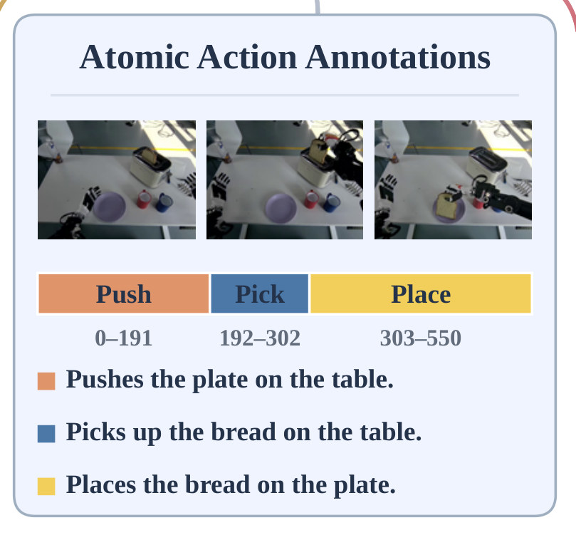
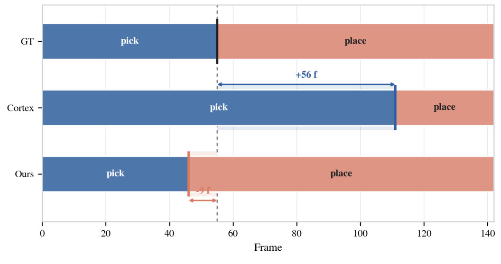
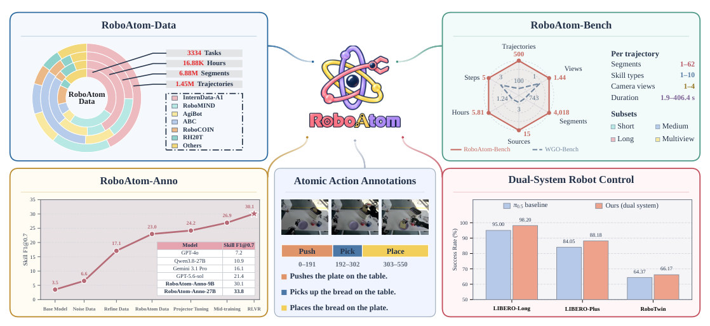
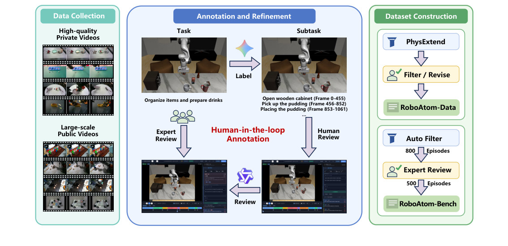
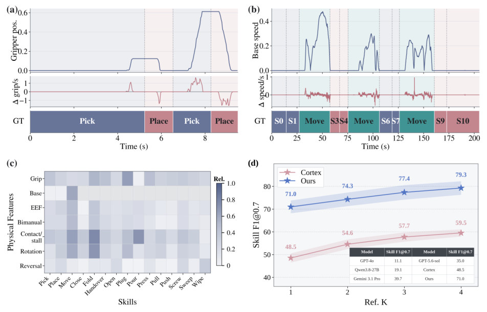
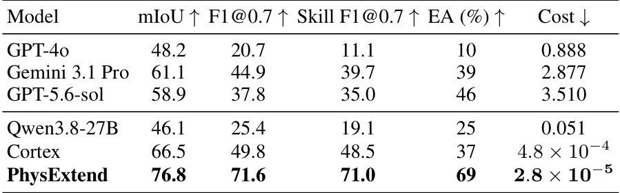
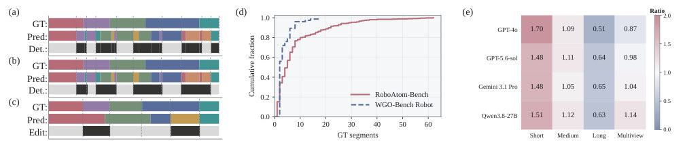
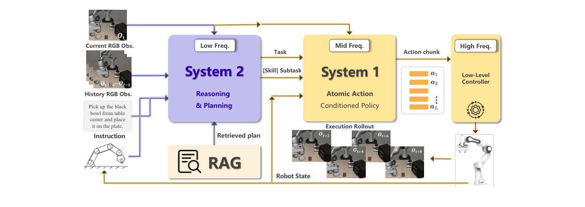
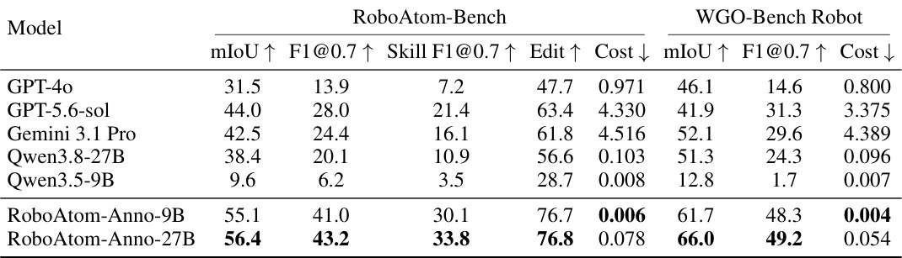
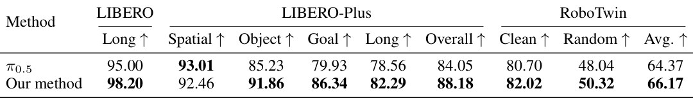

Atom-Action · 归档于 2026-11-02
RoboAtom
RoboAtom: Large-scale Atomic-Action Supervision for Robot Learning
归档到 Atom-Action：它做的正是"把演示切成 atomic action（skill 类别 + 描述 + 帧边界）"，再用这些标签训 skill-conditioned policy；控制实验跑在 LIBERO / RoboTwin 上，和 Robotic-harness 的 benchmark 重合。
TL;DR
- Problem
- 机器人数据集只有 task 级指令，没有时间对齐的 atomic-action 标注；少数有的，词表和粒度互不兼容，没法合在一起训；人工逐条标 ≈100 USD / 视频小时，通用 video LLM 顺序对但边界错。
- Idea
- 统一 29 类 skill 协议 → 每个 task 只人标几条 reference → PhysExtend 用夹爪开合、底盘速度等物理信号把边界传播到同 task 的所有重复执行 → 1.45M 条轨迹的 RoboAtom-Data；再用它训 annotator（RoboAtom-Anno）和 atomic-action-conditioned 双系统 policy。
- Result
- RoboAtom-Anno-9B 在 RoboAtom-Bench 上 Skill F1@0.7 30.1 vs GPT-5.6-sol 21.4，成本 0.006 vs 4.330 USD / 视频小时（Tab. 3）；双系统 π0.5 LIBERO-Long 98.20 vs 95.00，LIBERO-Plus 88.18 vs 84.05，RoboTwin 66.17 vs 64.37（Tab. 4）。
Problem
想要每段视频的 "Push / Pick / Place + 帧边界"：现有数据没有，人标太贵，通用 VLM 标不准
Running example · 后面每个 stage 都跟着它走
面包视频（Fig. 1 中间）：一段 550 帧的真机视频 + task 指令，机械臂先推盘子、再拿面包、再把面包放到盘子上 → 想要 3 段时间对齐的 atomic action：Push 0–191 "Pushes the plate on the table"、Pick 192–302 "Picks up the bread on the table"、Place 303–550 "Places the bread on the plate"。再想要：同一 task 的其他几十条重复执行也都标上，最后用这些标签训一个 policy。

flowchart LR IN["例子输入
550 帧视频 + task 指令"] IN --> A1["现有数据集的标签
OXE / DROID 只有 task 指令；
RH20T / Galaxea 自带 subtask"] A1 --> AX["没有，或对不上
RH20T 把多次 pick-place 合成一段；
Galaxea 是 PickAndPlace 复合标签"]:::gap IN --> B1["人逐条标
看视频、拖边界"] B1 --> BX["太贵
≈100 USD / 视频小时，
全量数据有 16,882 h"]:::gap IN --> C1["通用 video LLM
GPT-5.6-sol / Gemini 3.1 Pro
直接输出 segments"] C1 --> CX["顺序对、边界错
Skill F1@0.7 = 21.4，Edit 63.4；
4.330 USD / 视频小时"]:::gap IN --> D1["同 task 传播 · Cortex
拟合 reference 的特征分布"] D1 --> DX["速度 / 停顿一变就漂
Pick→Place 边界晚 56 帧；
Skill F1@0.7 = 48.5"]:::gap
推断的"坏在哪"：通用 VLM 的"顺序对、边界错"来自 §4.3 的分析（Edit 63.4 但 temporal F1@0.7 只有 28.0，Tab. 3）；Cortex 的"速度/停顿一变就漂"来自 §3.3 的说法和 Fig. C.1 的单个例子（Tab. 2 给的是 100 条轨迹的平均 48.5）；"≈100 USD / 小时"是 §3.2 的报价，16,882 h 是 §3.5 的总量，两者相乘是我的推算。现有数据集那一条来自 §1、§2.1 和 A.3 的描述。
根本问题：atomic-action 标签要同时满足"跨数据源一个词表"和"帧级准确的时间边界"，现有标签、人工、通用 VLM 各缺一角。 这篇的切入点：词表统一成 29 类协议；每个 task 只人标几条 reference，边界用物理信号（夹爪开合、底盘速度）传播到同 task 的所有重复；再拿这 1.45M 条标签训 annotator 和 policy。

Related work
| 相关工作 | 解决什么 | 怎么解决 | 和本文的区别 |
|---|---|---|---|
| 同一问题 · 别的解法 | |||
| 自带 subtask 的数据集 AgiBot World, Galaxea Open-World, RoboInter-Data, BEHAVIOR-1K, RH20T | 给自己的轨迹加子任务标签 | 各自定义词表、粒度和时间覆盖 | 互不兼容，没法 pool → RoboAtom 把 16 个源映射到一个 29 类词表、统一切分规则 |
| 同 task 传播 Cortex | 把 reference 分段传到同任务其他执行 | 用 state-action + 视觉特征拟合 reference 分布 | 速度、停顿、重试一变就漂 → PhysExtend 用 skill 专属物理事件 + DP + 单调投影，Skill F1@0.7 71.0 vs 48.5 |
| video→subtask 评测 WGO-Bench | 评测模型从机器人视频标子任务 | 时间分段 + 开放词表标签匹配 | 开放词表、中位只有 2 段 → RoboAtom-Bench 闭合 15 类、中位 5 段、4 个子集、语义和边界分开算 |
| 相似做法 · 别的问题 | |||
| 通用视频 temporal grounding VTimeLLM, TimeChat, TimeLens, TimeLens2 | 在普通视频里定位一句话对应的时间段 | 多模态 LLM 生成带时间的证据 | 没有机器人 skill 词表、不分开评语义和边界 → 本文用 29 类词表，Skill F1 和 temporal F1 分开 |
| 中间动作监督的控制 RT-H, ECoT, π0.5, Hi Robot, GR00T N1, RoboBrain | 让 policy 先想中间步骤再出动作 | language motion / 推理链 / 高层规划 + 低层执行 | 依赖已有或自造的标注，跨源不一致 → 本文先把标注做成统一数据层，双系统沿用 Hi Robot 结构 |
来源：论文 §2 Related Work，以及 §1、§3.3（和 Cortex 的对比）、§4.1（和 WGO-Bench 的对比）；未另行检索。
Level 1 · Big picture
每个 task 人标几条，物理信号传播到其余，得到百万级 atomic-action 标签；再用它训 annotator 和 skill-conditioned policy

怎么读这张图
- 左上 RoboAtom-Data：环形图是 16 个来源的占比（InternData-A1、RoboMIND、AgiBot、ABC、RoboCOIN、RH20T、Others），右侧 3334 Tasks / 16.88K Hours / 6.88M Segments / 1.45M Trajectories 是总量。
- 中间 Atomic Action Annotations：就是本页例子，三帧对应 Push / Pick / Place，帧区间 0–191 / 192–302 / 303–550，三句 action description。
- 右上 RoboAtom-Bench：雷达图红线是 RoboAtom-Bench（500 Trajectories、4,018 Segments、5.81 Hours、15 Sources、1.44 Views、5 Steps），蓝虚线是 WGO-Bench；右侧 Per trajectory：每条 1–62 段、1–10 种 skill、1–4 路相机、1.9–406.4 s；四个子集 Short / Medium / Long / Multiview。
- 左下 RoboAtom-Anno：Skill F1@0.7 随训练配置上升：Base Model 3.5 → Noise Data 6.6 → Refine Data 17.1 → RoboAtom Data 23.0 → Projector Tuning 24.2 → Mid-training 26.9 → RLVR 30.1；小表是对比：GPT-4o 7.2、Qwen3.8-27B 10.9、Gemini 3.1 Pro 16.1、GPT-5.6-sol 21.4、RoboAtom-Anno-9B 30.1、-27B 33.8。
- 右下 Dual-System Robot Control：蓝 π0.5 baseline vs 橙 Ours (dual system)：LIBERO-Long 95.00 → 98.20，LIBERO-Plus 84.05 → 88.18，RoboTwin 64.37 → 66.17。
flowchart LR I["Input
16 源轨迹；
本例：550 帧面包视频"] --> M1["人标几条 + 物理传播
同 task 人标几条，
其余 PhysExtend 自动"]:::win M1 --> M2["RoboAtom-Data
Push 0–191 / Pick 192–302
/ Place 303–550 ×1.45M 条"] M2 --> O["Output
annotator RoboAtom-Anno；
skill-conditioned π0.5"]:::win
Level 2 · Stages
6 个 stage：4 个造数据，2 个用数据

怎么读这张图
- 左 Data Collection：High-quality Private Videos（内部录的）和 Large-scale Public Videos（16 个公开源），全部转成 LeRobot v2.1 → Stage 1。
- 中 Annotation and Refinement：Task 一张图配一句 task 指令 "Organize items and prepare drinks"，Label 后变成 Subtask 列表 "Open wooden cabinet (Frame 0-455) / Pick up the pudding (456-852) / Placing the pudding (853-1061)"；下方 Human Review（人改）→ Review（Qwen3-VL 提修改建议）→ Expert Review（人定）构成 Human-in-the-loop 回路，两张截图是标注和复核界面（Fig. A.1、A.2）→ Stage 2。
- 右上 Dataset Construction：PhysExtend → Filter / Revise → RoboAtom-Data：把 seed 传播到同 task 的其他轨迹，再质检 → Stage 3、4。
- 右下：Auto Filter 从人标数据筛出 800 Episodes → Expert Review 留 500 Episodes → RoboAtom-Bench → Stage 4。
- 对应例子：面包视频所在的 task，先有几条进中间回路成为 reference，其余走右上的 PhysExtend。
flowchart TD S1["1 · Unify
16 源 → LeRobot v2.1 + 29 类 skill 词表"] --> S2["2 · Seed 标注
每个 task 人标几条 reference"] S2 --> S3["3 · PhysExtend
夹爪事件定 Pick | Place 边界，
传到同 task 全部重复"]:::win S3 --> S4["4 · QC + Bench
RoboAtom-Data 1.45M 条；
RoboAtom-Bench 500 条"] S4 --> S5["5 · RoboAtom-Anno
Qwen3.5-9B 三阶段训练 → Skill F1@0.7 30.1"]:::win S4 --> S6["6 · Dual-system policy
π0.5 按 [Pick] / [Place] 指令执行 → LIBERO-Long 98.20"]:::win click S1 href "#stage-1" click S2 href "#stage-2" click S3 href "#stage-3" click S4 href "#stage-4" click S5 href "#stage-5" click S6 href "#stage-6"
点击 stage 展开 Level 3 细节。贯穿所有 stage 的 annotation protocol（3 个字段 + 切分规则）见 Protocol。
Level 3 · Details
每个 stage 的细节
Protocol Annotation protocol：每个 stage 都按它来 任意轨迹 → 一列 segment，每段 3 个字段
- 3 个字段（§3.1）：skill category（跨源共享的 29 类之一）、action description（保留物体和动作细节的一句话）、start / end frame（和轨迹对齐）。
- 切分规则（§3.1、A.1 prompt）：只在主导 skill 变化时开新段；准备、移臂、过渡、空闲并入相邻段，不输出 Static；Pick = 从没拿到拿住，Place = 放手，二者分开；Move 只指底盘平移，手臂伸缩不算；双臂标主导手，Handover 只给手间直接交接；抽屉用 Pull / Push，铰链门、盖子用 Open / Close；复合行为拆成单 skill 段。
- 29 类词表（A.3）：Pick, Place, Handover, Move, Open, Close, Push, Pull, Press, Rotate, Screw, Plug, Pour, Fill, Scoop, Stir, Dip, Shake, Fold, Tie, Wipe, Sweep, Wash, Brush, Cut, Peel, Strike, Scan, Throw；Unfold 归 Fold、Unscrew 归 Screw，描述里保留原动词。
- 中间标签（A.1）：Idle 保留时间段但 skill 为空、不计入段数；Recover 按实际做的动作归类。
- 谁用它：Stage 1 的标签映射、Stage 2 的 prompt、Stage 3 的夹爪事件项、Stage 4 的质检标准、Stage 5 的输出 JSON、Stage 6 的训练条件。
Running example 在这一步
面包视频按规则切成 3 段：推盘子是 Push（不是 Move，因为底盘没动）；手臂伸向面包的过程并入 Pick；夹爪松开面包那一刻之后才算 Place 结束。
Stage 1 Unify：16 个源统一格式和词表 各源原始轨迹 + 各自的 subtask 标签 → LeRobot v2.1 + 29 类词表下可复用的标签
- Why：不同源的 subtask 词表、粒度、时间覆盖都不一样，不能直接 pool（§2.1，Tab. 1：AgiBot World Beta 77 类、2026 版 43 类、Galaxea 58 类、RoboInter 15 类、BEHAVIOR 35 类）。
- How：全部转 LeRobot v2.1；只保留同一 task 有多条重复演示的 task（§3.1）。
- 有 subtask 标签的源（AgiBot World Beta / 2026、Galaxea Open-World、RH20T、RoboCerebra）：本地 Qwen3.8-27B 按 source-specific 规则把标签映射到 29 类；复合标签拆开——Galaxea 的 PickAndPlace 用夹爪开合切成 Pick + Place，RH20T 多次 pick-place 合段的用原始 temporal clip 恢复边界（A.3）。
- 拿不准的：Qwen3.8-27B 看图复核 → GPT-5.6-sol 复核语义和粒度 → 人最终裁定（§3.1）。
- 没有 subtask 标签的源（InternData-A1、RoboMIND、LIBERO、RoboTwin 2.0 等）在这一步只拿到统一格式，标签要等 Stage 2–3。
flowchart LR a["源标签
PickAndPlace"] --> b["规则映射 + 拆复合
夹爪开合 → Pick | Place"] b --> c["模型 / 人复核
Qwen → GPT-5.6-sol → 人"] c --> d["29 类标签
Pick 192–302,
Place 303–550"]
Running example 在这一步
论文没说面包视频来自哪个源。若它来自没有 subtask 标签的源，这一步只得到 LeRobot 格式和 task 指令；若来自 Galaxea 这种带 "PickAndPlace" 复合标签的源，这里就用夹爪开合把它拆成 Pick 192–302 + Place 303–550。
Stage 2 Seed 标注：human-in-the-loop 标 reference 每个 task 的几条轨迹（extension 评测里每 task 5 条）→ 人工复核过的 reference 标注
- Why：PhysExtend 需要同 task 的 reference；人标全量太贵，所以只标几条。
- How：Gemini 3.6 Flash 看 3×4 contact sheet（12 帧拼图）+ task 指令，按 A.1 的 prompt 输出有序 segments（JSON：seg_id, start_frame, end_frame, subtask, primitive_skill）。contact sheet 比整段视频便宜而质量不降（§3.2，沿用 WGO-Bench 的发现）。
- 人在 Fig. A.1 的界面改 skill、描述、起止帧，调粒度和顺序。
- Qwen3-VL-235B-A22B-Instruct 按 A.1 的 review prompt 查拼写、skill–描述不一致、物体颜色 / 容器错误（错误类别：boundary_error, wrong_object, wrong_action, wrong_bin, missing_action, extra_action …），输出 correct / incorrect + 修正版；人逐条接受或拒绝；两边都错的交 administrator。
- 成本 ≈100 USD / 源视频小时（§3.2）。
flowchart LR a["Gemini 3.6 Flash 预标
3×4 拼图 →
3 段草稿"] --> b["人改
Pick 起点定到
握住面包那帧"] b --> c["Qwen3-VL-235B 复核
核对 bread / plate"] c --> d["人定稿
Push 0–191 / Pick 192–302
/ Place 303–550"]
Running example 在这一步
面包 task 的几条轨迹进这个回路。Gemini 先给出 Push / Pick / Place 三段和大致边界；按 protocol，人把 Pick 起点定在夹爪从空到握住面包的那一帧（192），Place 终点在放手后（550）；Qwen3-VL 核对描述里的 bread、plate 和画面一致。定稿后它们成为该 task 的 reference。
Stage 3 PhysExtend：物理信号把边界传到同 task 的其余轨迹 target 轨迹（同 task、同 ordered skill 序列）+ k 条 reference → target 的内部边界
- Why：同一 task 的重复执行共享 skill 顺序，但速度、停顿、重试不同；Cortex 拟合特征分布会漂（Fig. C.1 晚 56 帧）。夹爪开合、底盘速度这类物理事件和 skill 切换是绑定的（Fig. 3a–c），用它们定边界更稳。
符号表（Eq. 1–2，Fig. 3）
| 符号 | 是什么 | 例子里的值 |
|---|---|---|
| T | target 轨迹的总帧数 | 550 |
| y_{1:M}, M | 已知的有序 skill 序列和段数（和 reference 相同） | [Push, Pick, Place]，M = 3 |
| b_m | 第 m 段的结束帧；b_0 = 0，b_M = T，要求递增（Eq. 1） | 要求的是 b_1、b_2；理想值 191、302 |
| C_m | 第 m 段相对 reference 在"相对位置 + 累计运动进度"上的偏差惩罚 | Pick 段的手臂运动曲线要和 reference 的 Pick 段对得上 |
| D_m | 第 m 段时长偏离 reference 的惩罚 | Pick 段约 111 帧，不能长到离谱 |
| Q_m | 第 m 个边界处 skill 专属的夹爪事件惩罚 | Pick | Place 边界要落在夹爪"从握到松"的事件附近 |
| λ_d, λ_q | 时长项和夹爪事件项的权重 | 论文没给数值 |
- How：候选边界来自 reference 的段时长、累计运动对齐和夹爪事件（C.4）。
- 动态规划在有序候选上联合选 b_1…b_{M−1}，使 Eq. 2 的三项之和最小，Eq. 1 保证边界递增、不重叠。
- 物理事件修正：Pick / Place 边界对齐到可靠的夹爪开合事件（方向从 reference 校准，适应不同机器人的夹爪编码）；Move 对齐底盘速度（Fig. 3a、3b）；双臂协调、接触停顿、旋转、方向反转是额外线索（Fig. 3c）。
- 多条 reference：每条独立跑，边界融合后做 monotonic projection，保证不重叠、覆盖全程（Fig. 3d：1 条 71.0 → 4 条 79.3）。
- 速度：单 CPU 每小时 15,952 条，2.8×10⁻⁵ USD / 视频小时，吞吐是 Cortex 的 17.1 倍（C.4）。
flowchart LR a["Reference + target
5 条人标 + 1 条新面包轨迹"] --> b["候选边界
按段长比例 + 夹爪事件"] b --> c["DP 最小化 Eq. 2
C + λ_d D + λ_q Q"] c --> d["事件修正 + 多 ref 融合
Pick | Place 扣到
夹爪松开那帧"]:::win

怎么读这张图
- (a) 上 Gripper pos.：夹爪开度随时间；中 Δ grip/s：开合速度；下 GT 色条：Pick / Place / Pick / Place。夹爪闭合（开度上升沿）落在 Pick 段内，张开落在 Place 段内——这就是 Q_m 用的事件。例子里 Pick | Place 边界（302）就该在夹爪松开面包的那一刻。
- (b) Base speed / Δ speed/s：底盘速度在三个 Move 段有峰，S0–S10 的操作段里为 0；Move 边界用它定。
- (c) 热图：横轴 15 个 skill，纵轴 7 类物理特征（Grip / Base / EEF / Bimanual / Contact-stall / Rotation / Reversal），颜色是相关强度 Rel.。Move 列只有 Base 深；Pick、Place、Plug、Pour 的 Grip 深；Fold、Handover 的 Contact-stall 和 Rotation 深。
- (d) Skill F1@0.7 vs Ref. K：蓝 Ours 71.0 → 74.3 → 77.4 → 79.3，红 Cortex 48.5 → 54.6 → 57.7 → 59.5；小表：GPT-4o 11.1、Qwen3.8-27B 19.1、Gemini 3.1 Pro 39.7、GPT-5.6-sol 35.0、Cortex 48.5、Ours 71.0。

Running example 在这一步
同 task 另一条面包轨迹，机器人慢了一拍，Push 用了更久。DP 先按 reference 的段长比例给候选，再把 Pick | Place 边界扣到夹爪松开面包那一帧。Fig. C.1 是同类 pick→place 的单例：GT 边界在第 55 帧，Cortex 放到 111（+56 f），PhysExtend 放到 46（−9 f）。
Stage 4 QC + Bench：质检出 RoboAtom-Data，专家复核出 RoboAtom-Bench 传播后的全量标注 → RoboAtom-Data（1,446,974 条 / 6,876,282 段 / 16,882.1 h）+ RoboAtom-Bench（500 条 / 4,018 GT 段）
- Why：传播会把 reference 的错复制到整个 task；执行结构不同的轨迹根本不能传；描述里的物体 / 颜色不能照抄 reference。
- How · 质检（§3.4）：每个 dataset–embodiment 组抽 20 条人工查动作序列、边界、描述和目标轨迹的一致性、reference 的系统性错误、同 task 各 seed 的一致性。
- 执行步骤不同的 task（扫地有的倒垃圾有的不倒）整个排除不传播。
- 传感差异：RoboMIND 的 Agilex 双臂用全关节 DTW 对齐速度；移动双臂加底盘状态区分 base 运动；grasp / release 相对边界有稳定偏移的用同 task reference 校准；reference 选择综合运动相似度、夹爪事件数、时长，语义不兼容的 reference 不融合。
- seed 一致时 subtask 分割准确率 87.6% / EA 80.5%，不一致时 79.5% / 57.4%，所以对不一致的 reference 再做一轮人工统一；某些仿真 benchmark 上分割准确率到 100%。
- 描述语义修正：同 skill 序列但物体 / 颜色 / 顺序不同（先苹果后橙子 vs 反过来），Qwen3.8-27B 对照多视角图核对，GPT-5.6-sol 按 reference、词表和字段约束改，人最终确认；不动时间分割，除非明显缺段、多段或大偏移。
- 发布门槛：subtask segmentation accuracy ≥ 85%、EA ≥ 75%，达不到就继续改。
- How · Bench（§4.1，A.5）：从人标数据按 source、view、段数筛出 800 候选 → 专家复核留 500 条，4,018 GT 段，带 view 标注；闭合词表 15 类（Close, Fold, Handover, Move, Open, Pick, Place, Plug, Pour, Press, Pull, Push, Screw, Sweep, Wipe）覆盖 99.2% 的段。
- 子集：Short 200 条 1–4 段、Medium 100 条 5–8 段、Long 100 条 9–62 段、Multiview 100 条同步多相机；中位 5 段，WGO-Bench Robot 中位 2 段。
符号表（Eq. 3–5，Fig. 5）
| 符号 | 是什么 | 例子里的值 |
|---|---|---|
| G_i / P_j | 第 i 个 GT 段 / 第 j 个预测段 | GT Pick 192–302 / 某模型预测的 Pick 200–310（示意） |
| tIoU(G_i, P_j) | 两段的时间交并比 | 重叠 200–302 比并集 192–310，约 0.87（示意值，我算的） |
| π | 保持顺序的一对一匹配，使总 IoU 最大，不看 skill | GT 三段对预测三段 |
| N_G | 所有 episode 的 GT 段总数 | Bench 上是 4,018 |
| mIoU | 匹配上的 IoU 求和除以 N_G，没匹配的算 0 | 只看边界，不看 skill |
| τ | 算 F1 时 IoU 的门槛 | 0.7（主表） |
| Temporal F1@τ | IoU ≥ τ 的有序匹配对，不看 skill，TP / FP / FN 跨 episode 累加 | 三段都 ≥ 0.7 则 3 个 TP |
| Skill F1@τ | IoU ≥ τ 且 skill 一致才算 TP（MS-TCN 风格匹配） | 预测把 Push 写成 Move，这段就是 FP + FN |
| S_P / S_G, d_Lev | 预测 / GT 的 skill 序列（相邻重复合并）和它们的编辑距离 | [Push, Pick, Place] vs [Push, Pick, Place]，d_Lev = 0 → Edit = 100 |

怎么读这张图
- (a) GT / Pred / Det.：temporal 指标只按顺序一对一配时间段，颜色（skill）不管；Det. 行黑块是没配上的。
- (b)：Skill F1 要求颜色也一致，所以黑块更多。
- (c) Edit：只比 skill 序列，黑块是插入 / 删除 / 替换，和时间无关。
- (d)：红 RoboAtom-Bench 的 GT 段数拖到 62，蓝虚 WGO-Bench Robot 几乎都在 10 以内。
- (e)：GPT-4o、GPT-5.6-sol、Gemini 3.1 Pro、Qwen3.8-27B 在 Short 上预测段数是 GT 的 1.48–1.70 倍（切多了），在 Long 上只有 0.51–0.65（合并了）；Long 里 21.8% 的动作短于 2 s，2 FPS 下只占几帧（§4.3）。
Running example 在这一步
面包 task 若被抽到 QC，检查 bread / plate 描述是否和画面一致、Push 是否被错标成 Move；若它被选入 Bench，就是 Short 子集里的一条 3 段轨迹：模型要输出 3 段、skill 都对、每段 IoU ≥ 0.7，才能在 Skill F1@0.7 上拿满。
Stage 5 RoboAtom-Anno：用数据训一个自动 annotator 视频（2 FPS，≤ 448 帧）+ task 指令 → JSON 的有序 segments（skill, subtask, start_frame, end_frame）
- Why：有了 RoboAtom-Data，可以训一个比通用 VLM 更准、更便宜的 annotator，给新数据自动标（§5.1）。
- How · 底座：Qwen3.5-9B，零样本 Skill F1@0.7 只有 3.5。
- Robot-domain mid-training（A.4、B.2）：2,841,942 样本、27 个子集、6 类任务（Robot QA 1,007,450 / Grounding 1,080,004 / Spatial reasoning 409,602 / Planning 326,747 / Locomotion 17,185 / Manipulation 954；Tab. A.4），1 epoch，3,084.1 GPU-h / 48 GPU。
- SFT（B.1）：task 采样的 RoboAtom 子集（排除 Bench 的 task），LLaMA-Factory，LoRA rank 8 在语言和视觉侧，同时更新 ViT-LoRA 和 visual merger（Tab. C.1 四种配置里最好，22.7），500 步，27.7 GPU-h / 8 GPU。
- GRPO（B.3）：ms-swift，5,000 条按离线难度分层（3,000 medium / 1,250 hard / 750 easy），每 prompt 采 8 个候选，364.5 GPU-h / 16 GPU。
符号表（Eq. 6–7）
| 符号 | 是什么 | 例子里的值 |
|---|---|---|
| R_temporal | 有序时间匹配的 F1@0.5，不要求 skill 对；权重 0.70 | 三段边界都接近 → 高分 |
| R_soft | 有序匹配的 IoU 之和 ÷ max(预测段数, GT 段数)，给边界连续反馈；权重 0.10 | 多切一段就被分母惩罚 |
| R_edit | skill 序列的编辑相似度；权重 0.18 | [Push, Pick, Place] 全对 → 满分 |
| R_format | JSON 可解析、字段齐全；权重 0.02；解析失败前三项清零、总奖励 −0.02 | 缺 end_frame 就罚 |
| A_i | 候选 i 的优势：(r_i − 组内均值) ÷ (组内 std + 10⁻⁴)（Eq. 8） | 8 个候选里比平均好的为正 |
- 效果阶梯（Fig. 1 左下，§5.3）：3.5 → 6.6（用开源的噪声 subtask 标签 SFT）→ 17.1（词表对齐 + 歧义过滤，261 task / 4,459 条）→ 23.0（换 RoboAtom 标签 + 语言 LoRA，和 GPT-5.6-sol 的 21.4 相当）→ 24.2（+ 视觉模块更新）→ 26.9（mid-training；mIoU 52.9 → 54.6）→ 30.1（GRPO；temporal F1@0.7 35.5 → 41.0，预测 / GT 段数比 1.20 → 0.99）。
- 同配方换 Qwen3.8-27B 底座：Skill F1@0.7 33.8，WGO-Bench Robot F1@0.7 49.2，WGO Ego 28.3。
flowchart LR a["Qwen3.5-9B
Skill F1 = 3.5"] --> b["Mid-training
2.84M 机器人
QA / grounding"] b --> c["SFT on RoboAtom
LoRA + ViT + merger，
500 步"] c --> d["GRPO
0.70 temporal + 0.10 soft
+ 0.18 edit + 0.02 format
→ 30.1"]:::win
Running example 在这一步
输入面包视频（按 2 FPS 采样）和 task 指令，RoboAtom-Anno 输出 {"segments":[{"skill":"Push","subtask":"Pushes the plate on the table","start_frame":0,"end_frame":191}, {"skill":"Pick",…,192,302}, {"skill":"Place",…,303,550}]}。GRPO 阶段若它是训练样本，8 个候选按三段的时间重叠（0.70）、IoU（0.10）、skill 序列（0.18）、格式（0.02）打分，比组内平均好的候选被强化。
Stage 6 Dual-system policy：atomic 指令条件化 π0.5，System 2 调度 RoboAtom 标注的 (观测, 动作, skill 指令) 对 → atomic-action-conditioned π0.5 + System 2 调度器
- Why：task 级指令让 policy 自己猜进行到哪一步；atomic 指令把长任务切成短段，每段只做一件事（§5.2，结构沿用 Hi Robot）。
符号表（Fig. 6）
| 符号 | 是什么 | 例子里的值 |
|---|---|---|
| o_t | 当前 RGB 观测 | 碗还在桌中央的当前帧 |
| o_{t−20} … o_{t−1} | 最近 20 帧历史观测 | 机械臂刚伸向碗的几帧 |
| Instruction | 整条 task 指令 | "Pick up the black bowl from table center and place it on the plate" |
| Retrieved plan | RAG 从 task 知识库取回的 task-plan prior：候选 skill 和描述 | [Pick: pick up the black bowl, Place: place it on the plate] |
| [Skill] Subtask | System 2 当前发出的 atomic 指令 | [Pick] pick up the black bowl |
| a_1 … a_L | System 1 一次输出的 action chunk | 接下来 L 步的关节 / 夹爪动作 |
| o_{t+2} … o_{t+8} | 执行后的新观测（Execution Rollout） | 碗已被握住抬起 → System 2 切到 [Place] |
- 训练（B.4）：每个 (观测, 动作) 对的语言条件 = 它所在 segment 的 skill 标签 + action description，而不是整条 task 指令；OpenPI 全量微调 π0.5，global batch 256，LIBERO 8 GPU 30k 步，RoboTwin 32 GPU 60k 步；baseline 用同样预算、只换成 task 指令。
- 两边都关图像增广：π0.5 关增广 LIBERO-Long 95.00 > 开增广 92.40（Tab. C.5），RoboTwin 64.37 > 58.35（Tab. C.6）。
- 推理（§5.2，B.4）：System 2 = Qwen3.8-27B，输入 task 指令 + o_t + 20 帧历史 + RAG 取回的 plan prior，决定保持当前 atomic 指令还是切下一条（Low Freq.）；System 1 = π0.5 按 [Skill] Subtask 出 action chunk（Mid Freq.）；Low-Level Controller 执行（High Freq.）；新观测回到 System 2。
- 注意：在线跑的不是 RoboAtom-Anno；System 2 从 task 知识库的 plan 里选，RoboAtom 的贡献是训练时的 segment 级语言条件。

怎么读这张图
- 左列三类输入：Current RGB Obs. o_t、History RGB Obs. o_{t−20}…o_{t−1}、Instruction "Pick up the black bowl from table center and place it on the plate"；三者都进紫色 System 2，o_t 还直接进 System 1。
- 紫 System 2 Reasoning & Planning（Low Freq.）：下方 RAG 给它 Retrieved plan；它往右输出两路：Task（整条指令）和 [Skill] Subtask（当前 atomic 指令）。
- 黄 System 1 Atomic Action Conditioned Policy（Mid Freq.）：就是 segment 级语言条件训出来的 π0.5，输出 Action chunk a_1…a_L。
- 右 Low-Level Controller（High Freq.）→ 机械臂：执行 chunk；下方 Execution Rollout o_{t+2}…o_{t+8} 和 Robot State 回流到 System 2 / System 1。
flowchart LR a["System 2 取 plan
[Pick bowl, Place on plate]"] --> b["发 atomic 指令
[Pick] pick up
the black bowl"]:::win b --> c["π0.5 出 chunk
a_1…a_L，握住碗抬起"] c --> d["看新观测
碗已离桌 → 切 [Place]"] d --> b
Running example 在这一步
到控制端，同一套 Pick / Place 标签换到 LIBERO 的 Fig. 6 任务 "Pick up the black bowl from table center and place it on the plate"：System 2 先发 "[Pick] pick up the black bowl"，看到夹爪握住碗抬起后切 "[Place] place it on the plate"；π0.5 每次只需完成一个 atomic action。LIBERO-Long 95.00 → 98.20（Tab. 4）。
Recap：例子覆盖了论文的哪些 idea
| 论文里的 idea | 例子里在哪体现 |
|---|---|
| 统一 protocol：3 字段 + 切分规则 + 29 类词表 | Protocol：面包视频切成 Push / Pick / Place，推盘子不算 Move，伸手并入 Pick |
| 复用并映射各源已有的 subtask 标签 | Stage 1：若来自 Galaxea，PickAndPlace 用夹爪开合拆成 Pick + Place |
| Human-in-the-loop seed：Gemini 预标 → 人改 → Qwen3-VL 复核 → 人定 | Stage 2：Pick 起点定到握住面包那帧，核对 bread / plate |
| Contact sheet 降成本 | Stage 2：Gemini 看 3×4 拼图而不是整段视频 |
| PhysExtend：DP + C / D / Q 三项 + 夹爪事件修正 | Stage 3：慢一拍的面包轨迹，Pick | Place 边界扣到夹爪松开那帧 |
| 多 reference 融合 + monotonic projection | Stage 3：5 条 reference 各跑一遍再融合；Fig. 3d 1 条 71.0 → 4 条 79.3 |
| QC：排除执行结构不同的 task、DTW、语义修正、发布门槛 | Stage 4：检查 bread / plate 描述；85% / 75% 门槛 |
| RoboAtom-Bench 4 子集 + mIoU / temporal F1 / Skill F1 / Edit | Stage 4：面包轨迹在 Short 子集，三段 IoU ≥ 0.7 且 skill 对才满分 |
| RoboAtom-Anno：mid-training → SFT → GRPO，四项 reward | Stage 5：输出 JSON 三段；候选按 0.70 / 0.10 / 0.18 / 0.02 打分 |
| 双系统：segment 级语言条件训 π0.5，System 2 + RAG 调度 | Stage 6：Fig. 6 的黑碗任务，[Pick] → 碗抬起 → [Place] |
| 主结果 | Results：Anno-9B Skill F1@0.7 30.1；LIBERO-Long 98.20 |
Results
结果一览
- Skill F1@0.7 30.1 RoboAtom-Anno-9B 在 RoboAtom-Bench 上，vs GPT-5.6-sol 21.4、Gemini 3.1 Pro 16.1、Qwen3.8-27B 10.9、GPT-4o 7.2；mIoU 55.1 vs 44.0，Edit 76.7 vs 63.4；成本 0.006 vs 4.330 USD / 视频小时（Tab. 3）。27B 版 33.8。
- F1@0.7 48.3 在外部 WGO-Bench Robot 上（vs 最强参照 GPT-5.6-sol 31.3，+17.0）；WGO Ego 21.1 vs 14.1；27B 版 49.2 / 28.3（§5.3）。
- Skill F1@0.7 71.0 / EA 69% PhysExtend 用 1 条 reference，vs Cortex 48.5 / 37%、GPT-5.6-sol 35.0 / 46%；成本 2.8×10⁻⁵ USD / 小时；4 条 reference 到 79.3（Tab. 2，Fig. 3d）。
- LIBERO-Long 98.20 vs π0.5 95.00（+3.20）；LIBERO-Plus overall 88.18 vs 84.05（Object +6.63、Goal +6.41、Long +3.73，Spatial 反而 92.46 vs 93.01）；RoboTwin Clean 82.02 vs 80.70、Random 50.32 vs 48.04、平均 66.17 vs 64.37（Tab. 4）。
- Short 71.1 → Long 17.3 RoboAtom-Anno-9B 的 Skill F1@0.7 随子集段数增多急降；Medium 43.7、Multiview 33.9（Tab. C.3）。
- 1.20 → 0.99 GRPO 把预测 / GT 段数比拉回 1，temporal F1@0.7 35.5 → 41.0（§5.3）。


Limits
局限和开放问题
- 论文自述（§6）：没验证 atomic 监督在大规模 policy pretraining 里的作用；没包含 egocentric 人类视频——人的动作短碎、常常不到 1 s，当前采样率难定位，可能需要更粗的 atomic 定义。
- Long 子集（9–62 段）Skill F1@0.7 只有 17.3（Tab. C.3）：长时序自动标注仍远不可用，2 FPS 下短于 2 s 的动作只占几帧（§4.3）。
- PhysExtend 要求 target 和 reference 的 ordered skill 序列完全相同（§3.3）；执行步骤有分叉的 task 整个被排除（§3.4），λ_d、λ_q 等参数没给数值。
- 控制端的 System 2 从 task 知识库的 plan prior 里选指令（B.4），不是开放任务的在线分解；LIBERO-Plus Spatial 还降了 0.55（Tab. 4）。
- 数据总量里仿真占 7,508 h、真机 9,375 h（§3.5）；发布门槛 85% / 75% 意味着发布版仍含错标（§3.4）。
For Atom-Action
对我们有什么用
- RoboAtom-Data 直接含 LIBERO（1,712 条 / 3,910 段 / 8 类 skill）、RoboTwin 2.0（27,500 条 / 70,396 段）、RoboDojo（3,500 条 / 31,063 段）的 atomic 标注（Tab. A.2）——正是 robot-harness Runtime 跑的三个 benchmark，可以当 harness skill library 的 ground-truth 分段，或给 Native API / Codex policy 的子任务 prior。
- 双系统（§5.2）和 harness 同构：System 2 = agent 挑 atomic 指令，System 1 = 条件化 VLA；差别是它的 System 2 只在知识库 plan 里选、没有 verification / admission——Supervisor 可以接在两者之间，PhysExtend 的"夹爪事件 = Pick / Place 边界"也可当判断 atomic action 是否完成的 evidence 信号。
- 和 AtomicVLA 对比：AtomicVLA 在 policy 内部 think 出 skill（词表手定 5–8 个），RoboAtom 把 skill 标签做成数据层（29 类、跨 16 源）；两者可拼——用 RoboAtom-Data 训 AtomicVLA 的 think 头，词表直接用 29 类。